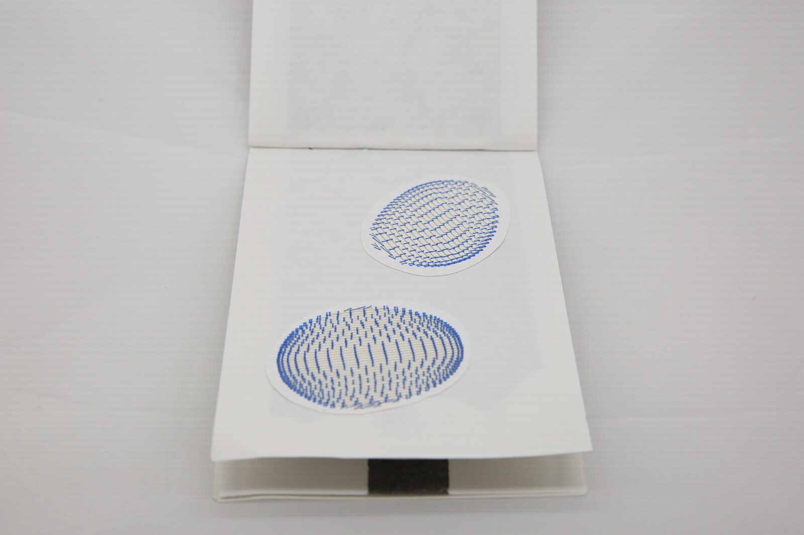
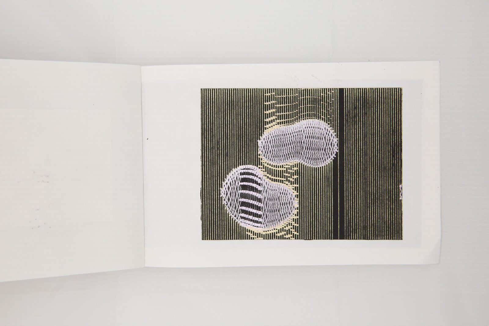
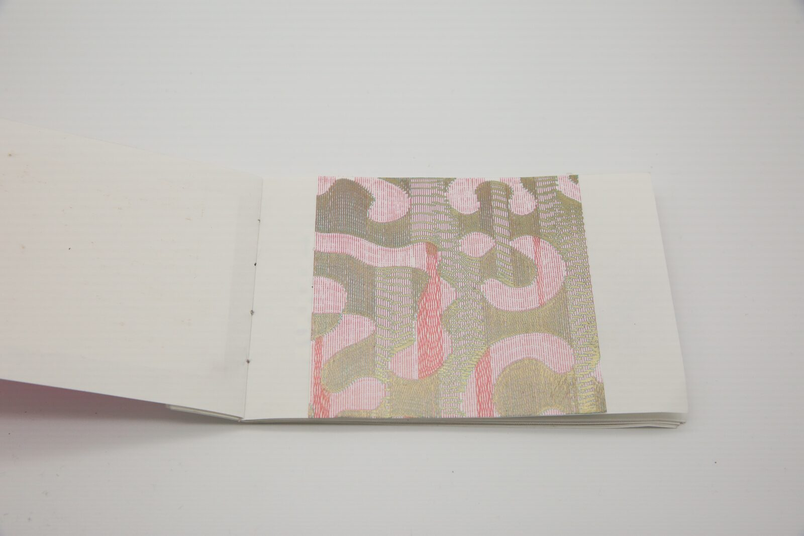
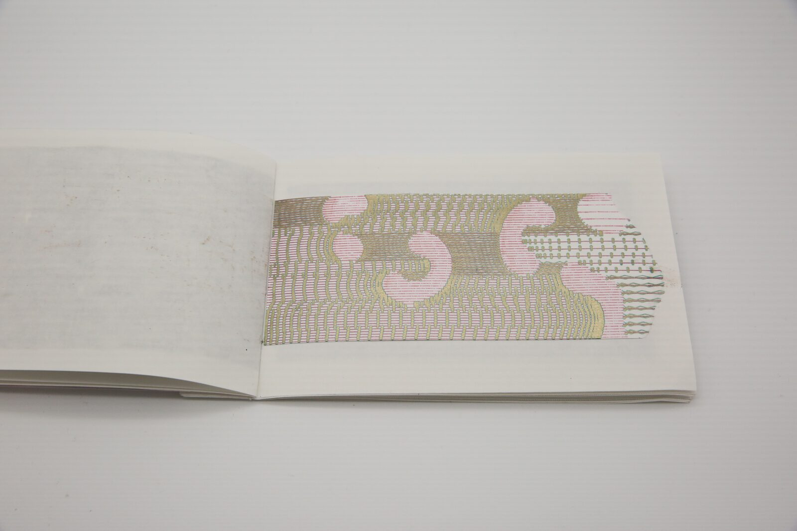
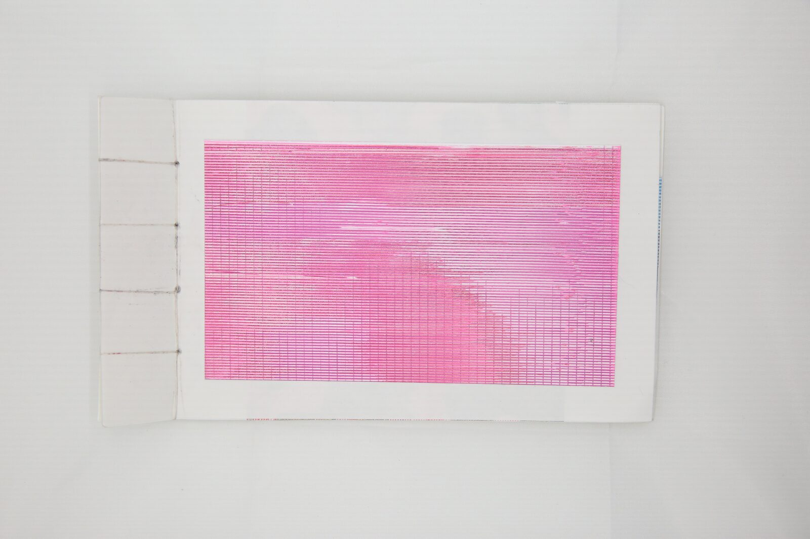
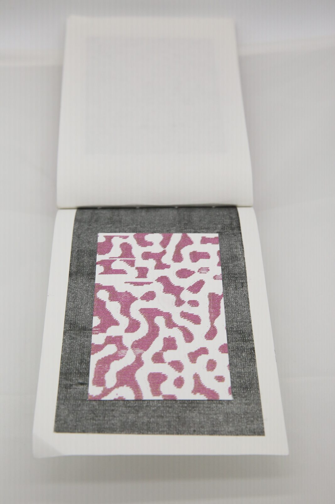
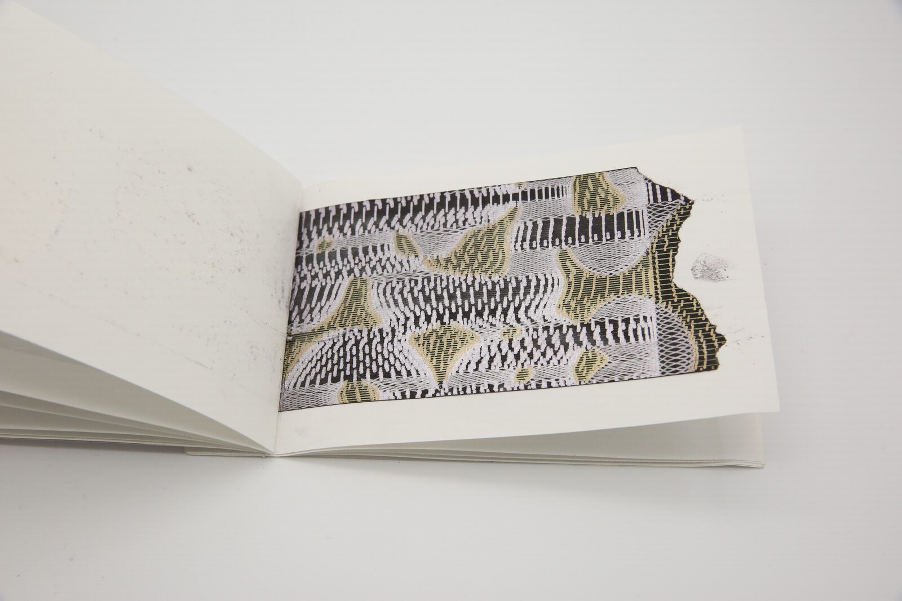

blob flops
A hand-bound book of plotted reaction diffusion, cut down to its best pockets.

This one started as a failure. I wanted to use reaction diffusion, the simulation behind patterns like animal spots and stripes, to tone an image or turn it into vectors. It didn’t work at all.
So I went the other way and tried to make the simulation itself feel alive: a reaction diffusion that runs in real time and reacts to the cursor. My first attempt, in p5.js, was far too slow. After a crash course from Golan Levin on openFrameworks, I translated the math and my p5.js tests into C++, and finally had a simulation that ran in real time.
From simulation to line
With a working simulation, I could play with its parameters and watch the blobs split, merge and settle. I used OpenCV inside openFrameworks to trace the edges of the blobs, then filled the negative space with simple linear hatching. That gave me a drawing a plotter could follow.


Making the plotter skip
In parallel, I was testing the plotters themselves. I plotted the same set of parallel lines on top of itself again and again, adjusting the calibration, the pen height and the pen to force skips on the paper. The machine’s small mechanical failures started making patterns of their own.
Eventually the two experiments became one. I plotted the reaction diffusion hatching in multiple layers, with multiple pens, on HP pen plotters and an AxiDraw.


A book of pockets
By the end I had a pile of plots, and a problem: most of them were only interesting in places. A sheet might hold one pocket of texture in a field of nothing much. So I cut the plots up, kept the best areas, and hand-bound them into a book of compositions.
A book felt like the right way to show them, much as photographers edit and sequence their work through photobooks. Each page is a small, curated view into an experiment that was mostly noise.



I made this for Golan Levin’s Drawing with Machines in 2024. I was very sick for most of the month before the exhibition, and I spent a lot of nights falling asleep to the sound of the AxiDraw plotting away.